Блендер BORK B800
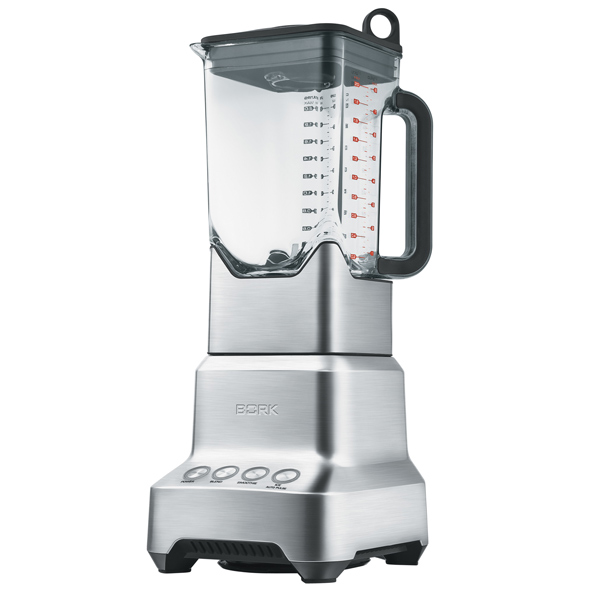Технические характеристики
Мощность: 2000 Вт
Объем кувшина: 2 л
Количество скоростей: 1
Количество режимов: 4
Материал кувшина: поликарбонат
Материал корпуса: металл
Габариты (ДxШxВ): 20x17x47 см
Вес: 4.93 кг
Материал Чаши
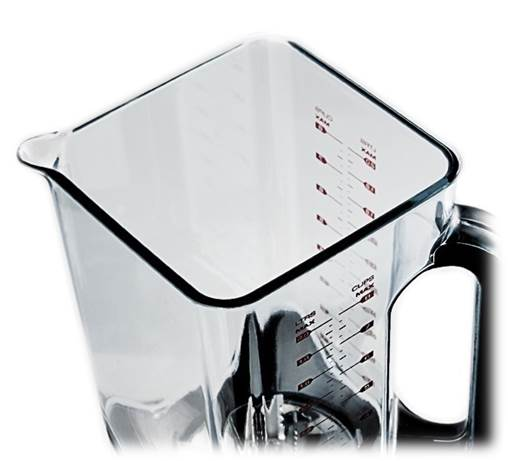Термопластичный конструкционный полимерный материал, обладающий высокой жесткостью и прочностью в сочетании с очень высокой стойкостью к ударным воздействиям, в том числе при повышенной и пониженной температуре.
Чаши блендеров BORK не содержат компонент Бисфенол А и маркируются BPA FREE.
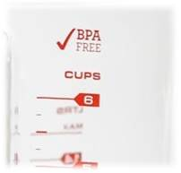Бисфенол А (BPA)— химическое вещество, представленное обычно в виде гранул белого цвета (1-2 мм). Бисфенол А из-за структурной схожести с женским половым гормоном эстрогеном оказывает негативное влияние на мозг и репродуктивную систему, а также служит причиной ряда онкологических заболеваний. Он опасен тем, что при нагреве или при длительном хранении пищевых продуктов в посуде, бисфенол А переходит из пластика в пищу. ОПАСЕН даже в очень малых количествах!
Уникальная форма чаши
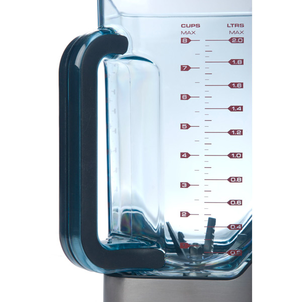- Правильная конструкция чаши обеспечивает равномерное перемешивание и измельчение продукта.
- В круглых чашах ингредиенты обычно разлетаются по стенкам, и требуется дополнительное время, чтобы переместить их снова на лопасти и перемешать. Поэтому, производители добавляют вертикальные ребра на внутренние стенки контейнера, ударяясь о которые продукт падает на ножи.
- Самые современные блендеры оснащаются квадратной формой чаши. Производители считают, что это наиболее удачная форма, необходимая для эффективной работы блендера.
Материал корпуса блендера
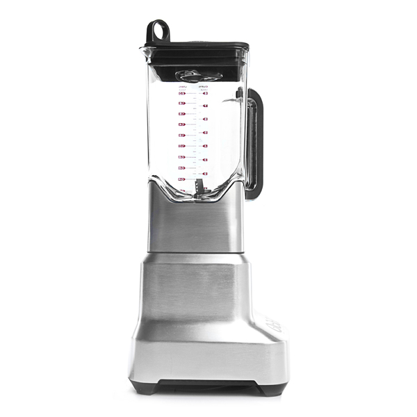Материал корпуса блендера выполнен из металла, поэтому блендер BORK B800 устойчив к царапинам и гармонично впишется в интерьер кухни.
Материал ножей
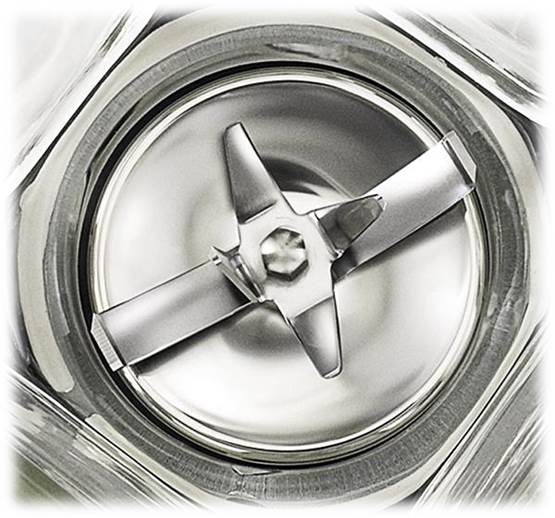Ножи во всех блендерах BORK выполнены из высококачественной нержавеющей стали SUS420J2. Эта сталь активно применяется в разных направлениях для деталей с повышенной твердостью.
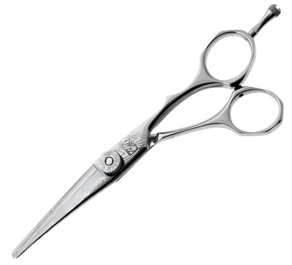Например, многие профессиональные парикмахерские ножницы, сделаны из этого сплава, и их стоимость доходит до 7000 рублей.
Система ножей – Kinetix
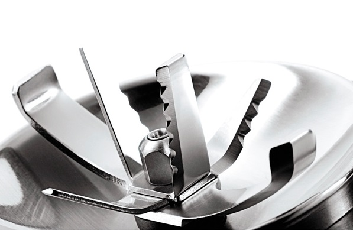В блендере BORK В800 установлена система ножей – Kinetix, которая включает в себя шесть ножей разной формы, исключая появления «пустых зон», обеспечивая смешивание продукта по всему объему чаши.
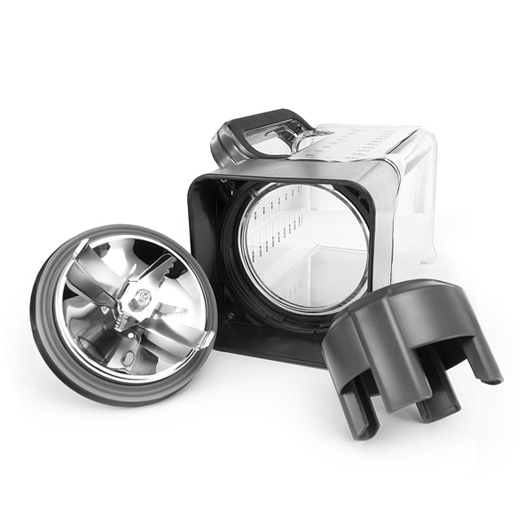Благодаря съёмным ножам, процесс мытья становится легким и быстрым.
Герметичная крышка, с дозатором
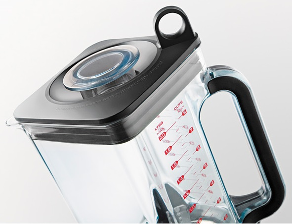Благодаря дозатору Вы можете добавлять ингредиенты прямо в процессе приготовления, а герметичная крышка избавляет от разбрызгивания.
Управление одной кнопкой
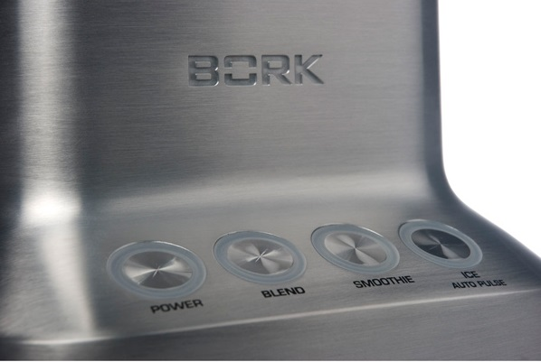Вы можете выбрать один из трех режимов:
- Blend: тщательное перемешивание продуктов – 2 минуты
- Smoothies: приготовление десертов "смузи"-1 минута
- IceAuto Pulse: дробления и измельчения – 1 минута
Устройство защиты от перегрузки
Предохранитель и датчик температуры, контролируемый платой управления, установлен на обмотке двигателя.
При возникновении перегрузки срабатывает аварийное отключение.
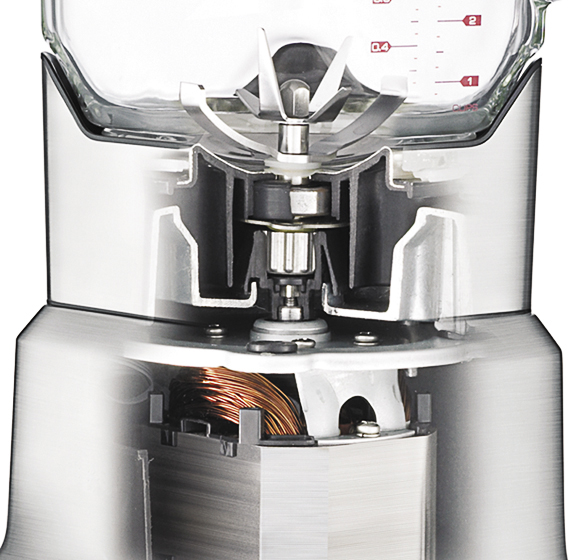Если блендер перегружен или работает непрерывно в течение продолжительного времени, двигатель может перегреться.
Аргументы для продажи
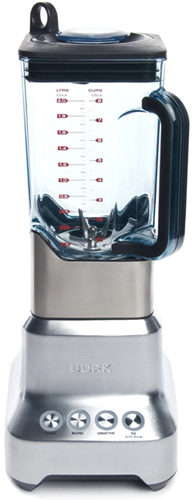
Обороты: 5500 об/мин
Низкий уровень шума
KINETIX: блок профессиональных ножей
Легкая вместительная чаша 2 л
Оригинальная конструкция чаши
Blend: тщательное перемешивание продуктов
Smoothies: приготовление десертов "смузи"
Ice/Auto Pulse: дробления и измельчения
Ножи из прочной легированной стали
Подсветка панели управления
Автоматическая защита от перегрузки
Удобное хранение сетевого шнура